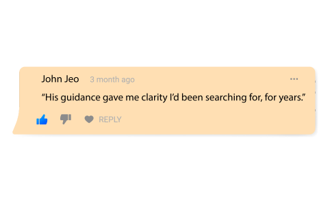

Meet Manzett Koushal
Your Trusted Astro Guide
With over 10 years of experience
and 1000+ lives
transformed, Ask Manzett Koushal offers personal,
one-on-one guidance using Tarot, KP Astrology,
Numerology, and Vastu.

Blending ancient wisdom with practical insight,
Manzett helps you decode life’s challenges
be it love, career, health, or family
through divine interpretations and real life remedies.
Mission
To empower individuals by decoding the hidden through astrology numerology.

Vision
To become a modern optivii consultancy that bridses ancients science with contemporary solutions.
Why Choose Manzett Koushal?
- 10+ Years Experience
- Certified KP Astrologer & Tarot Reader
- International Clients
- 95% Client Satisfaction
- Instant Remedies
- 1-on-1 Personalized Guidance
Awards & Recognition
Every question carries a vibration. My job is tunine in and deliver the truth hidden in the stars.
- Mazett KoushalAsk Me Anything
KP Astrology is a precise system known for its accurate predictions based on stellar positions.
Yes, remedies are tailored to your personal chart and situation.
Absolutely! Remote sessions maintain the same precision and guidance as in-person meetings.
What People Felt After Just One Session?
